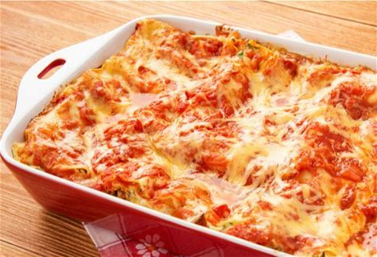

Lasanha

Descrição
Receita de lasanha da Ana Maria Braga, com molho bechamel(?) e molho de tomate. Embora nunca tenha comido, parece fácil de fazer e gostosa do mesmo jeito. Guilherme gosta de lasanhas no geral.
Ingredientes
Molho de Tomate
- 2 copos americanos de água
- 1 kg de tomates limpos cortados em 4 partes
- 1 cebola cortada em 6 partes
- 2 dentes de alho picados grosseiramente
- Folhas de manjericão a gosto
- 1 copo americano de água
- 100 ml de azeite de oliva
- 1 cebola grande picada
- 1/2 colher (sopa) de sal
- 1 dente de alho picado
- Sal e pimenta-do-reino
Para o molho bechamel
- 1 colher (sopa) de manteiga
- 1 colher (sobremesa) de farinha de trigo
- 1/2 xícara (chá) de leite (120 ml)
- Sal, pimenta do reino e noz moscada
Lasanha
- 2 xícaras (chá) do molho de tomate misturado com 1 xícara (chá) do molho bechamel
- 1 pacote de massa de lasanha pré-cozida (500 g)
- 400 g de muçarela ralada
- 400 g de presunto ralado grosso
- 2 xícaras (chá) de leite misturado com 1 lata de creme de leite
- 1 colher (sopa) de manteiga
- 1 xícara (chá) de parmesão ralado
Modo de Preparo
Molho de Tomate
- Misture os 5 primeiros ingredientes em uma panela grande e leve ao fogo médio por 25 minutos após levantar fervura.
- Com uma escumadeira, retire os sólidos (descarte o líquido, que é ácido) e transfira para o passa-verdura (que retém sementes e casca) ou copo do liquidificador (precisa peneirar) para transformar em purê (pingue a água limpa para facilitar). Reserve.
- Aqueça o azeite em fogo médio e refogue bem a cebola.
- Junte o alho, refogue um pouco e acrescente o molho de tomate.
- Tempere com sal e pimenta-do-reino a gosto e deixe ferver por 15 minutos.
Molho Bechamel
- Derreta a manteiga em fogo brando e junte a farinha, mexendo sempre.
- Com um batedor de arame, incorpore o leite aos poucos e cozinhe, sem parar de mexer, até ficar espesso. Tempere a gosto.
Lasanha
- Em refratário grande forrado com um pouco do molho, monte em camadas: massa de lasanha, muçarela, molho, presunto e massa de lasanha.
- Regue com a mistura de leite com creme de leite, cubra com filme plástico e leve à geladeira por 6 horas.
- Espalhe a manteiga na superfície, salpique o parmesão e leve ao forno médio preaquecido (180 ºC) por uns 30 minutos ou até gratinar.
Seguindo estes passos, você deve ser capaz de ter em mãos uma Bela e Deliciosa Lasanha!